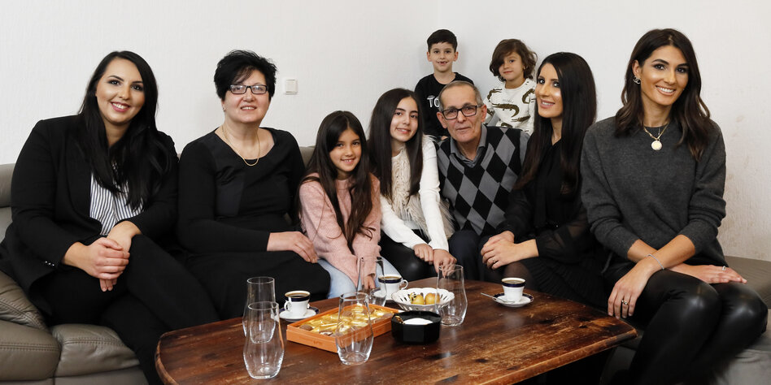
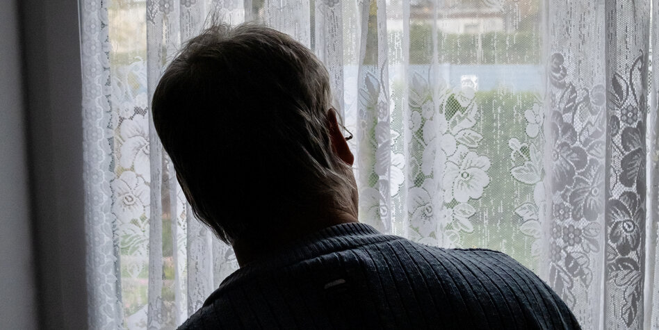
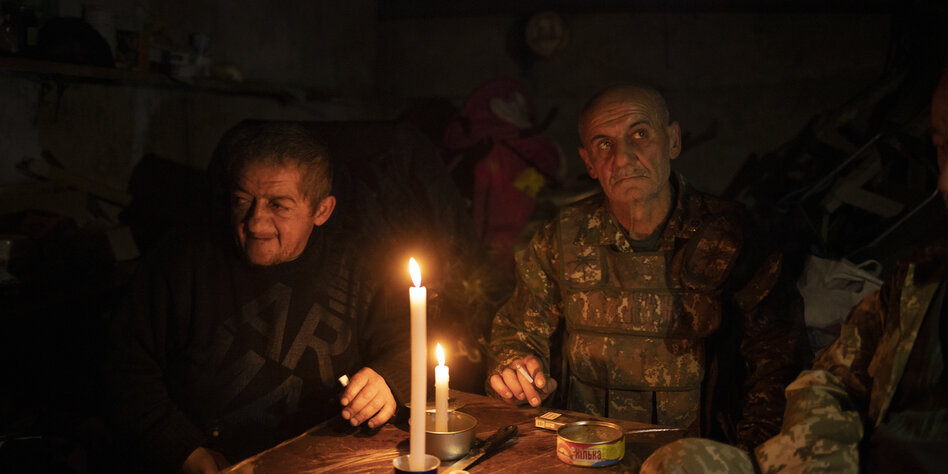
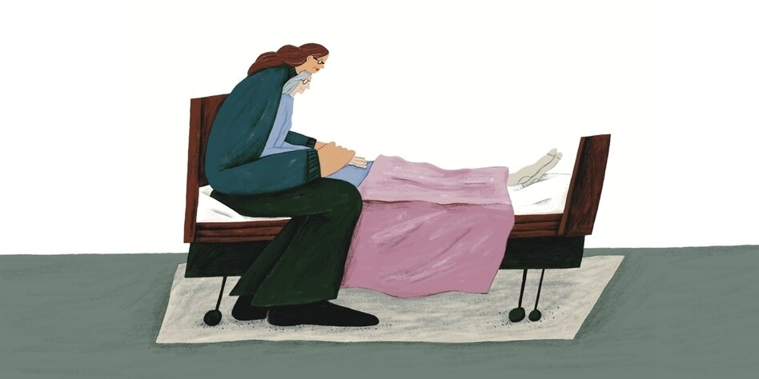
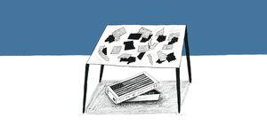
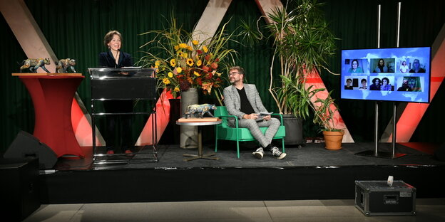
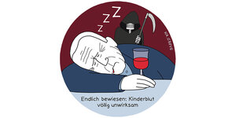

Das neue taz.de hat ein dynamischeres Layout und setzt dafür viel Javascript ein. Wir arbeiten daran, dass alles ohne Javascript zugänglich ist.
Unsere Autorin hat als Muslima Angst, sich nach dem Terroranschlag zu äußern. Anstatt trauern zu dürfen wie alle anderen, muss sie sich abgrenzen.
Am Samstag trafen sich die verschwörungsideologischen „Querdenker“ in Frankfurt. Die Polizei ging gewaltsam gegen GegendemonstrantInnen vor.
China schließt mit den Staaten Südasiens das weltweit größte Handelsabkommen – nachdem sich die USA aus dem asiatischen Raum zurückgezogen haben.
Im Dannenröder Wald ist am Sonntag eine Person verletzt worden. Aktivist:innen werfen der Polizei vor, ein sicherndes Stahlseil gekappt zu haben.
2015 scheiterte ein Terrorangriff auf einen Schnellzug Richtung Paris. Das Geschehen war filmreif. Der mutmaßliche Attentäter steht nun vor Gericht.
Auch nach einer Katastrophe wird die Welt schon irgendwie weitermachen. Don DeLillos neuer Roman „Die Stille“ handelt von einer Apokalypse.
Einst ist die armenische Familie Esajan nach Hannover geflohen. Der wieder entfachte Krieg um Bergkarabach, schweißt sie neu zusammen.
Der Onkel unseres Autors ist ein verurteilter Pädophiler. Wie kann man mit ihm umgehen?, fragt der Autor. Und wie verhindern, dass er rückfällig wird?
Walter Frankenstein träumt wieder von der Verfolgung. Bella Szwarcman-Czarnota hat Angst. Überlebende des Holocausts trifft die Pandemie doppelt.
Konsequentes Handeln kann Infektionszahlen drücken, wie Neuseeland zeigt. Wer untätig bleibt, zahlt wie in Tschechien dagegen einen hohen Preis.
Drei Brüder und ihr Vater verbringen ihre Zeit in einem Keller, wenn sie nicht draußen kämpfen. Der Konflikt um Bergkarabach zwingt sie zur Flucht.
Die Mutter ist krank und ohne Aussicht auf Heilung. Sie hört auf zu essen und zu trinken. Die Tochter begleitet sie und führt Tagebuch.
Die Coronamaßnahmen sind ein Problem für die Demokratie und verhindern gesellschaftliche Resilienz.
Kulturschaffende aus Zagreb, Belgrad und Ljubljana befürchten, dass Corona die Kultur aus ihrem Leben verdrängt. Sie fühlen sich ungerecht behandelt.
Die DFB-Elf gewinnt gegen die Ukraine und die Uefa gegen die Leipziger Gesundheitsbehörde. Denn die ukrainischen Coronafälle sind der größte Aufreger.
Ich bin damit einverstanden, dass mir externe Inhalte angezeigt werden. Damit können personenbezogene Daten an Drittplattformen übermittelt werden. Mehr dazu in unserer Datenschutzerklärung.
Armeniens Sicherheitsdienste haben nach eigenen Angaben einen Anschlag auf Regierungschef Nikol Paschinjan vereitelt. Drei Personen seien festgenommen worden.
Gerd Müller (CSU) soll seine Ehefrau mehrmals mit auf Dienstreisen genommen haben. Für Abgeordnete war deswegen offenbar kein Platz im Flieger.
Tausende Anhänger fordern in Washington eine zweite Amtszeit für den amtierenden US-Präsidenten. Der winkt ihnen nur kurz aus dem Auto zu.
Die bosnische Gemeinde Stolac ist in der Hand der kroatischen Nationalpartei HDZ. Jetzt hofft die bosniakische Bevölkerung auf einen Wechsel.
Roma sind fast immer die Verlierer. Verbände fordern nun, Abschiebungen während Corona auszusetzen.
Unser exklusives Testabo zum Fixpreis bietet ihnen die tägliche App-Ausgabe und die gedruckte taz am Wochenende. Je früher sie bestellen, desto mehr taz gibts fürs Geld.
Post-Corona-Kapitalismus • Restauration à la Biden • Polens teure Kohle • 200 Jahre Friedrich Engels
Tausende Anhänger fordern in Washington eine zweite Amtszeit für den amtierenden US-Präsidenten. Der winkt ihnen nur kurz aus dem Auto zu.
Biden wird die Spaltung nicht überwinden, denn weder Republikaner noch Demokraten wollen das. Das ist vielleicht auch okay.
 Kolumne Macht
Kolumne Macht In die Kommentierung der Wahl in den USA hat sich ein Ton eingeschlichen, der unserer Autorin missfällt. Eine Ermahnung – auch an Joe Biden.
Ohne die Linken wäre der moderate Demokrat Biden nicht gewählt worden. Aber kaum haben sie gesiegt, verstricken sich die Demokraten in Flügelkämpfe.
Ich bin damit einverstanden, dass mir externe Inhalte angezeigt werden. Damit können personenbezogene Daten an Drittplattformen übermittelt werden. Mehr dazu in unserer Datenschutzerklärung.
Die erste digitale Verleihung des taz-Panterpreises ist über die Bühne gegangen. Eine Aktivistin aus der Amazonasregion erhielt den Leser:innenpreis.
Solange Patient*innen nicht aktiv widersprechen, sollen ihre Behandlungsdaten Forscher*innen zur Verfügung stehen. Bislang ist Zustimmung nötig.
An jedem Freitag, den 13., gehen Arbeitnehmer:innen für ihre Rechte auf die Straße. Auch Michael Gläser, Ex-Betriebsrat bei der Coffeeshop-Kette.
... steht auf den taz Blogs.
Abseitiges, Tiefsinniges & Schönes von Autor*innen und Freund*innen der taz.
Die erste Ausgabe der Reihe "taz Talks meets Queer Lectures" mit Aaron Lahl und Jan Feddersen.
Ein taz Talk unter Freund:innen: Wie steht’s um die Würdigung nichtweißer Menschen?
Monty Ott spricht in diesem Talk über Jüd:innen und Antisemitismus im intersektionellen Aktivismus.
Medien profitieren von gesellschaftlichen Krisen wie der Coronapandemie oder Donald Trump. Leider nutzt das den Journalist:innen wenig.

Jedes Jahr zum Advent ist die Vorfreude auf Clementinen groß. Doch dann: Zu weich, ja labbrig, wässrig, voller Kerne – ein Obst direkt aus der Hölle.
Antisemitismus, Rassismus, Homophobie – Lisa Eckhart wurde vieles vorgeworfen. Fest steht: Gecancelt wurde die Kabarettistin nicht. Ein Gespräch.
Olga Grjasnowa erweist sich als furchtlose Erzählerin. In „Der verlorene Sohn“ malt sie eine historische Geschichte aus Russland in frischen Farben.
Wie können Galerien in der Pandemie Zeit Aufmerksamkeit finden? Podcasts sind eine Möglichkeit, um mit Kunst und Künstler*innen bekannt zu machen.
Jella Lepman erinnert in „Die Kinderbuchbrücke“ an den Aufbau der Internationalen Jugendbibliothek im Nachkriegsdeutschland.
Am Sonntag steigt das Duell Bayern gegen die Wölfinnen: An der Spitze wird die Liga der Frauen ausgeglichener. Doch nur BR und NDR übertragen das Spiel.
Früh haben sich Sportler gegen Machthaber Lukaschenko postitioniert. Doch viele Athleten schweigen. Zu groß sind die Abhängigkeiten vom Staat.
Nie waren die Quoten so niedrig, mit der DFB-Elf geht es bergab. Die Bundesliga sollte sich Sorgen machen: Die fetten Jahre sind vorbei.
Beim Münchner Dopingprozess gegen den Erfurter Arzt Mark Schmidt kommen neben kuriosen Tarnnamen Details zu dessen Netzwerk ans Licht.
Die Berliner Tafel hat in Charlottenburg einen neuen Laden eröffnet. Das Besondere: Lebensmittel können gegen Trödel getauscht werden.
Raplabel-Chef, Journalist, Aktivist, Kampfsportler, Fensterputzer und Industriekletterer: Marcus Staiger über sein Leben in einem krassen Interview.
Der Vater unserer Autorin ist gestorben. Er lebte ein Leben voll mit Schönem und Nicht-so-Schönem. Eine traurige wie liebevolle Kolumne zum Abschied.
Ein Impfstoff ist in Sicht und Berlin hat auf die Schnelle alles top generalstabsmäßig vorbereitet. Doch bei der Kältehilfe sieht das ganz anders aus.
Der neue Präsident der USA steht fest. Die schönsten Anekdoten über den sympathischen Greis Joe Biden.
Das Ordnungsamt hat das Ordnungsamt verlassen, seine Sheriffs patrouillieren durch den Berliner Wedding, denn Ordnung muss sein!
In „Das Gift der Ungleichheit“ sucht Verdi-Chefökonom Dierk Hirschel nach Wegen, den Kapitalismus zu bändigen.
Vom 19. bis 22. November geht das größte Festival für Poesiefilm über den Stream. Wir verlosen Zugänge.
Über 140 Einzelpersonen und Organisationen haben sich für den taz Panter Preis 2020 beworben.
Glaubensfreiheit konnten sich nur die reichen Flüchtlinge kaufen. Eine Altonaer Schau bricht mit dem Mythos der altruistischen Toleranz.
Dass das Modeunternehmen „Krawattendackel“ im neurechten Magazin „Cato“ wirbt, ist kein Zufall. Die Hamburger schielen aufs rechte Milieu.
Laut Verwaltungsgericht darf die Polizei auf St. Pauli nicht anlasslos Personalien prüfen. Geklagt hatte ein Schwarzer wegen Racial Profiling.
Wie hätten Sie ihre taz denn gern? Wählen Sie aus unseren vielfältigen Abo-Angeboten, für jede Lesegewohnheit gibt es ein passendes Angebot:
• Der Klassiker: Lesen Sie Ihre taz täglich sechs Tage die Woche und inklusive taz am Wochenende.
• Für die Couch: Lesen Sie wöchentlich die taz am Wochenende, jeden Samstag neu.
• Für unterwegs: Schützen Sie Bäume und haben Sie Ihre taz trotzdem immer dabei – das ePaper machts möglich.
• Die unschlagbare Kombi: Das Beste beider Welten – werktags erhalten Sie Ihre taz als ePaper auf ihr Tablet und jeden Samstag die gedruckte taz am Wochenende.